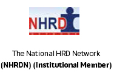
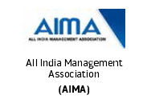

Call Us On: 180011334 | Email: admissions@asiapacific.edu


Placements
Asia Pacific Institute of Management

Alumni
Alumni Association
The Asia-Pacific Alumni Association (AAA) offers an opportunity to our alumni to remain in touch with their alma mater. They are the Brand Ambassadors of Asia-Pacific Institute of Management and its most powerful communication channel to the outside world. As they come back repeatedly for a 360 sharing of experiences with their seniors, juniors, batch-mates and faculty, they bring in the latest trends and happenings from the corporate world.
They take back with them the latest knowledge from academia along with renewed memories, and through word-of-mouth enthuse more corporates to recruit Asia-Pacific graduates. All graduating students automatically become life-members of the AAA. The Alumni Affairs Committee takes care of the activities, under the close supervision of the CCR.
Alumni Speak
Garima Bhandari,
Pursuing Doctoral Programme
South Carolina, USA
Greetings to the prospective students of AIM. I attended the AIM in 1998-2000. This has helped me in gain good insight into the corporate world not only in India but here in the US also. I had come in search of top MBA colleges in Delhi. After a lot of considerations, eventually chose to be a part of AIM and today I am proud of being an AIM alumnus The faculty is well versed in their respective fields. I offer my gratitude to Dr.Arun Dravium for his continuous unflinching encouragement in helping me further my career even here in USA. My advice to all the prospective students is that aim high, dream big dreams and you will succeed in life. Your education and hard work will always pay off; it is only a matter of time. There are many students like you, here in the U.S. and India, who have come to realize their dreams. So it is alright to persevere. With Asia Pacific and under the guidance of Professor Draviam I can say that you are in good hands and rest is up to you to perform. Good luck to you all in your current and future endeavors. Go Asia Pacific! With Best Wishes, Garima Bhandari

Devesh Kumar
Sr. Manager
Janalakshmi Financial Services Pvt. Ltd
Greetings and Welcome to the prospective students of AIM. I am Sr. Manager in Janalakshmi Financial Services Pvt. Ltd, responsible to look after North Zone. I am doing a project in Bihar funded by World Bank. I am pursuing my P.hd in Banking. I am proud of being an alumnus of AIM. Faculty at AIM are well versed in their own fields. I am very thankful to Prof. Arun Draviam and Prof.Ravindra Bhatia who have guided me to make my career in Banking and related Financial Services. My advice to all the prospective students is that choosing the specialization should be the 1st priority . Further if you have chosen an Institution with all required infrastructure, then you have taken right step for a successful career. Come and join AIM and feel the difference.

Vivek Mukul
Microsoft Corp.
Asia Pacific Institute of Management has a culture of its own which is inculcated in its students right from the onset of the course. The course curriculum is well designed, planned and executed. The faculty is always forthcoming with guidance and support pushing students to perform their best. Optimum Stress is given on class room learning as well as self learning through the various assignments and projects. AIM certainly is a platform for a global learning.

Arindam Saha
I had short listed AIM in search of some top MBA colleges in Delhi and can proudly say that I took the right decision. Thanks to AIM for giving me the rights blend of academic and professional education that has helped me to grow in the corporate world. The faculty and the support staff at AIM groomed my personality meticulously and the fun-filled two years of my PGDM will be cherished forever. The experienced faculty and the robust industry exposure made AIM a renowned name in the field of Management Education.

Prasant Mishra
Sales Lead-SME&CHANNELS
AGC Networks Ltd-An Essar Enterprise
Hi, its really good to remember those old days of study, friends, faculties, staff and fun at Asia Pacific, which made us feel it like another home at a new place. Now a days we also feel proud in saying to be an alumni of Asia Pacific Inst of Mgmt.
Himanshu Singh
Assistant Manager
AFAQS
I always wanted to do PGDM and Asia Pacific Institute of Management being one of the best B-Schools in North India known for its good placements and offers PGDM. Special thanks to the Corporate Relations Team for all the effort they make for better placements. I wish them luck for their future endeavors

Antara Guha
Manager - Training & HR
Choice Hotel India Limited
I wish to be informed about alumni meets at the Jasola Campus, and wish to attend the same and to be kept posted regarding the updates at the institute.
Somraj Dey
Manager-HR, Fedders Lloyd Corporation Limited
The tow year PGDM period of 2001-2003 was very helpful in achieving my career goal and convert my endeavors into real time achievements. The Course Curriculum was industry specific and overall faculties were excellent. It is a very good opportuity for all the aspirants to prove themselves. TOday I could achieve my professional aim because of Asia-Pacific Institute of Management

Vishal Kumar Srivastava
Assistant Manager
KPMG
AIM has been place where I found a unique blend of excellence and commitment. Great faculty, wonderful ambience to learn, and excellent facilities, this is how I describe AIM. If I were to describe AIM in one word it would be Excellence with Innovation. I would like to thank my faculty and fellow mates
Dipankar Chakraborty
Regional Merchandising & Events (South),
PPD
It gives me great satisfaction to be part of an institute which is an incredible platform for professionalism, integrity, and culture. It was indeed a pleasure to study under the guidance of renowned faculty accompanied with the guidance & exposure to the industry from the Center for Corporate Relations (CCR) of which I was too a member of and which eventually helped me getting placed with dual offers during our Final Placements. I am highly indebted to each and everyone from my alma mater- Asia Pacific Institute of Management for my success in professional life

Saba Jamal
Probationary Officer,
Federal Bank
Asia Pacific became my first choice because of its faculty and type of exposure it gives to its students. I am from Patna and had come in search of a top MBA college in Delhi. These two years here at AIM, have been a real learning experience & have in many ways, made me industry ready potential human resource. All thanks to the AIM faculty, for the timely guidance, in shaping up career. Remember “if you have the will, the rest will follow.” Always keep it burning.

Shivender Bhargav
Marketing Manager,
Imperial Auto Industries
It gives me great Pleasure to give back something to my institute in the form of vote of thanks for making me to establish myself in the corporate world with ease. It would not have been possible without the support which i got from the faculty of the institute, my fellow colleagues, ever inspiring chairman and my parents. The high level of education and practical training imparted throughout the course to handle management challenges and situations helped me not only to get the best knowledge but also the best campus placement in good organization. I would again like to thank Asia Pacific Institute of Management for building my career and making me a pillar which can cement itself anywhere in the market.
Ganesh Singh
Commercial Executive,
Worlds Window Group
I would like to convey my regards and thanks to AIM for their help in my placement by training me for the GD/PI and other technical help. I would also like to appreciate my regards for the coordination and help in calling so many elegant companies to our campus which help our batch to get a new start as a fresher. Thank you CCR Department and Asia-Pacific!!!!
Maaz Amir
Senior Sales Account Manager,
Big CBS Network
Asia Pacific Institute of Management well prepared me for my role in the professional corporate world. Asia Pacific Institute of Management focuses on using the lecture rooms as a laboratory for experiential learning, and encourages students to understand the criticalities of tough corporate world with the regular industrial exposure and established live case studies while completing the program. AIM gave me my first platform into the corporate world in the form of NDTV wherein I was able to apply what I learned in the classroom to real-world problems. With the strong and solid foundation at AIM I got an opportunity to work with few of the biggest media companies till date in a short career span of 4 years, like; NDTV, Hindustan Times (Fever 104 FM) and the number one US based TV Network ‘Big CBS Network’. There is so much that I achieved at this institution that talking about it will be an endless story. I will cherish these memories throughout my life.I am fortunate to be a part of Asia Pacific Institute of Management.
.jpg)
Sangram Keshari Panigrahi
Assistant Manager,
Hyundai Motor India Ltd.
AIM has been a place where I found a unique blend of excellence and commitment. Great faculty, wonderful ambience to learn, and excellent facilities is how I describe AIM. Great organizations always have a great leader, and AIM has been blessed with the leadership prominent faculty, supported by a wonderful team. Those two years of my life were not just full of hard work, but they were undoubtedly full of such lessons and experiences which made me a better person day by day. I left my college with diverse personality enhancements and such intangible assets which are now a part of my attitude. I thank AIM for recognizing and appreciating my hard work and performance.

Nitin Bisht
GL-SBU HR,
Minda Corporation Ltd.
Asia pacific Institute of Management are in sync with the industry requirements. I have benefited by investing my 2 years here and I am already in the process of getting the life long returns.
Kadambani Gautam
Assistant Manager,
IDBI Bank
I took admission in Asia Pacific Institute of Management in 2010. It gives me immense pleasure to be a part of such an Institute which is ranked amongst the top business schools in Delhi. I believe APIM has given me a valuable education that will serve as a strong foundation in the years to come. The dedication, support & motivation of each of the faculty is remarkable & enable students to achieve their dreams! The rich curriculum, practical knowledge, presentations were the good source of knowledge. I am thankful to CCR Team for helping me in placement. I would like to thank APIM for all its support & guidance!!!

Rajatava Bagchi
Research Lead (Financial Services),
Evalueserve India Pvt. Ltd
I am an alumnus of this college, passed out in 2005 with specialization in Finance & Marketing. I am currently working as a Research Lead with Evalueserve a MNC based in NCR. Initially I was a little apprehensive about MBA colleges in Delhi. But after speaking to the mentors here at AIM, I could realize that this institute had lot better to offer compared to the top business schools in India. It is good to see the college doing well academically and otherwise . I wish everyone at Asia Pacific Institute of Management all the best in all their future endeavors.
Priyom Barooah
HR Executive,
Approach International
I was selected by several institutions of Delhi in 2009 for my PGDM. After assessing the institutions myself I selected Asia-Pacific Institute of Management for my for 2 year PGDM course. I was deeply involved in the activities of Asia Pacific. It had provided a very good opening in my career. The Faculty, the Library, the Courses, the Counseling Sessions, the Guest Lectures and Presentations were a good source of knowledge as well as entertainment for me. The imposing building, well maintained campus and the cordial staff members may also add attraction to any person who desires to build his/her career. It is my pleasure to say that I am a passed out of this Institute. I am thankful to all and particularly to the members of the HR faculty and the Placement Department (CCR) who had left no stone unturned for my placements even before the completion of last trimester. I am a Recruiter today, just the way I planned to initiate my career and I dedicate this achievement to the Placement cell. Thank you CCR. Thank you Asia-Pacific Institute of Management.
Rajyashree Hazarika
Management Trainee,
Gunnebo India ltd
We always do a work with a purpose, with an aim, Asia Pacific Institute of Management, AIM is one such institute which showed me direction to achieve my aim. I am sure, I will go far with the knowledge I gained from AIM. I am also thankful to the CCR department as they have supported us by providing the best guidance they can, because of which we all got the job that we were aiming for.

Akshita Modi
Assistant Manager,
ICICI Bank
Asia Pacific Institute of Management provides the students with a rigorous academic challenge blend with a rich personal development experience. The community of experienced faculty and engaged students allow for invaluable mentoring and teamwork opportunities. The PGDM (Banking and Financial services) program has provided me with the necessary skill sets to prepare for the corporate world. I am a banker today, just the way I planned to initiate my career and I dedicate this achievement to AIM faculty. At present I am working with India’s second largest bank “ ICICI Bank” and for that I eternally thank Centre of Corporate Relations (CCR) @ AIM, for guiding me. It’s been a wonderful journey in Asia Pacific Institute of Management and one which I know will continue for ever.
Saurabh Mahajan
Senior Analyst,
Copal Partners
It gives me a complete satisfaction to be part of an institute which is an incredible blend of professionalism, integrity, and culture. It's a pleasure to study under the guidance of renowned faculty with rich experience which gives us platform for successful career. I owe my success to Asia Pacific Institute of Management and thankful to them for their sincere efforts
Varun Gulati
Management Trainee,
ICICI Securities
I took admission in Asia pacific institute of management in 2009 and I feel blessed. I chose this institute because it is AICTE approved and ranked amongst the top management schools in Delhi. I considered some recommendations also. And today I am proud of my decision. This college satisfied me completely. Every possible care has been taken while designing our infrastructure. Air conditioned campus, spacious classrooms equipped with LCD projectors and audio system, well maintained library and information centre, Wi-Fi availability, cafeteria, auditorium and amphitheatre are some of the important features of this college. Faculty of this college is quite knowledgeable and cooperative. Proper guidance is provided to each n every student. Placement cell is very active and management is very helpful.
Alumni AIM
For Alumni Registrations, click Here
Student Outreach Programme
Students form strong foundation of any institution. When the young minds leave the organisation as successful professionals, the institute grows stronger and soars higher. Asia Pacific Institute of management cherishes the association with you and would like to nurture this connect into a lifelong relationship by offering you reasons to come back to your alma mater.The Student Outreach Program (SOP) is one such initiative that trusts your instinct about the qualified prospect of AIM. Needless to say prospective students want to hear from someone who has gone through and benefited from the experience
Therefore, if you have a friend or a colleague who qualifies for our PGDM program as per the guidelines given in the following pages who may refer the aspirant to us by filling up the details in the online form given ahead. For all recent happening and latest updates you may kindly direct the student to our website www.asiapacific.edu and our facebook page at https://www.facebook.com/asiapacificdelhi.
In order to reciprocate your kind gesture , we will be happy to send you a token amount and offer you following privileges which may be of immense value to you in your career :
Sending you information and invites to all our Special campus events , Seminars, Workshops and Management Development programs; Offering you a life time membership of our newly constructed library - 'Athenaeum' which will give you an access to a huge resource of one lac books, online journals and online database; and if teaching excites you , it will be a pleasure for us to invite you as guest faculty to share your corporate experience and insights .
Alumni Local Chapter Registration
Alumni Meet - Nostalgia 2014
AIM 16th Alumni Meet – Nostalgia 2014
Management education is not only the driving force for a true leader to move ahead in professional and personal life but also a worthy occasion to take a pause and reflect back, connect with one’s alma mater and share the richness of one’s journey. The Annual Alumni Meet 2014 of Asia-pacific Institute of Management, New Delhi proved to be that pause. Asia-Pacific Institute of Management, New Delhi Alumni Association, organized the 16th Alumni Meet – Nostalgia 2014 which was held at AIM Campus, New Delhi on 1st November, 2014. The Meet was organized to connect, strengthen and develop Alumni Network. Mrs. Nadira, Coo, Indo-Canadian Business Chamber graced the occasion as a Chief Guest. She shared her experience and appreciated all the faculty members and students for their contribution towards helping the institute to achieve 37th Rank among all B-school in India as per Business Today Survey. She also exhorted the students to explore the possibility of becoming an Entrepreneur. She advised the students to be in constant touch with the Alumni and bring glory to the institute by their hard work and dedication in the corporate.
Around 500 Alumni from various batches attended the Meet, it was heartening to note that Alumni from earliest batches also attended. The 2nd year students interacted with their Alumni and explored the possibilities of placement with their respective organizations.
All-in-all, the evening of 1st November, 2014 resulted in some rich experiences in the form of sharing of reminiscent times, new networks built, rich experience shared and a lot of appreciation showered by the alumni to AIM PGDM – 2012-14 batch for such an exemplary event management.
The all-pervasive feeling of the occasion can be summarized in this one quote - "Education is what survives, after you’ve forgotten what you memorized."
14th Alumni Meet-2012 Nostalgia
Nostalgia 2012', the 14th Annual Alumni Meet of Asia-Pacific Institute of Management, was organized with grand celebrations, on 24th November, 2012. Mr. Amit Roy, Chief of Audit and Assurance, NIIT Ltd, was the Chief Guest while Mr. Sandeep Sharma, VP- Delivery & Development, Syscom Corporation Ltd, was the Special Guest of Honour and Mr. Ajay Raghuvanshi, National Head- Dealer Development, Hyundai Motors India, was the Guest of Honour, at this occasion. Around 1500 Alumni attended the programme.umni attended the programme. The Alumni Meet, at the Asia Pacific Institute of Management, saw the Alumni recall their shared past with nostalgia. The Alumni Meet began with the Gansesh Vandana & Cultural Activities, performed by the current students. The Institute also felcitated alumni members with mementos.
More than 1500 alumni from all over India, participated in this event. It was a wonderful occasion to meet and share the experiences, with the alumni who postgraduated from the institute. An opportunity was given to every alumnus/alumnae, to share his/her experience at AIM campus and its impact on their respective career. The Chairman, Mr. A. K. Shrivastava, quoted that “It is an Institute’s Alumni who are its brand ambassadors and Asia-Pacific has always been proud of its Alumni, who occupy important positions in many reputed companies and organizations.”
In his message for this occasion, Dr D. K. Batra, Director, said, "We are all excited about Nostalgia 2012. Nostalgia provides a wonderful opportunity to rekindle old memories amongst the alumni, re-calling the heydays at AIM and bringing the AIM community of Alumni, Students and Faculty members, together. Going forward, we will be institutionalizing more initiatives, in order to bring AIM and alumni together."
Click Here for ALUMNI CONNECT

Asia-Pacific Institute of Management is a
top ranked Business School of India.
The latest Business Today - MDRA survey
ranked the Institute "6th" amongst private
B-Schools in North India (9th amongst all
B-Schools in North India).
Accreditions:


 


- ACADEMIC
PROGRAMMES - PGDM
- PGDM Marketing
- PGDM IB
- PGDM BFS
- Executive PGDM
- Certificate Course
in IBM SPSS Statistics
- IMPORTANT LINKS
- Apply Online
- About Us
- AIM Infrastructure
- Mandatory Disclosure
- AICTE Approval Letter
REQUEST A CALL BACK


© Asia Pacific Institute of Management. All rights reserved.